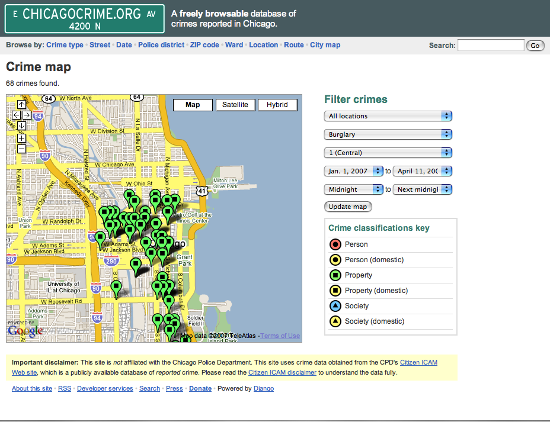

<html>
<head>
<script src="http://maps.google.com/?file=api"></script>
</head>
<body onload="hello()" onunload="GUnload()">
<div id="map" style="width:400px;height:300px"></div>
<script>
function hello() {
var map = new GMap2(document.getElementById("map"));
var point = new GLatLng(37.71859, 6.679688);
map.setCenter(point, 2);
var marker = new GMarker(point);
map.addOverlay(marker);
marker.openInfoWindowHtml("Hello World!");
}
</script>
</body>
</html>
Google
Developer
Day2007
Developer
Day2007
Maps API — Old Tricks and New Dogs
Steffen Meschkat

Copyright 2007 Google, Inc.
How Services communicate to the maps Server

- The HTML page invokes a service function.
- The maps API library encodes the arguments into a URL.
- API library creates a script element with that URL.
- Server responds to the request with script that contains response data wrapped into a callback invocation.
- Maps API library receives the data, removes the script element, and invokes the application callback.
Today: Finding an Apartment

How safe is the area?


How a Mapplet Communicates With Google Maps

- All function calls are serialized and packetized.
- The mapplet creates an iframe in the maps.google.com domain that includes the packet in the hash fragment of its URL.
- When this iframe loads, it extracts the packet from the hash fragment and forwards it to the map.
- All communication takes place in the browser. No server round trips!